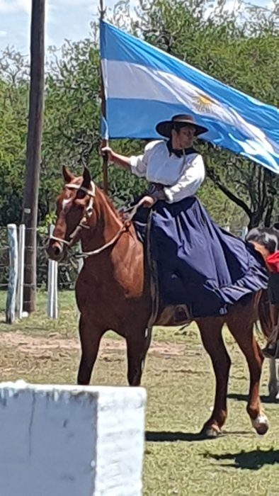

Todas las escapadas
Fiestas gauchas y costumbres de campo
Jinetes, carreras de sortija, desfiles con la bandera y la cultura criolla que sigue viva en los pueblos de Traslasierra.
Consultar esta escapada
Cómo es la escapada
En la zona se celebran fiestas gauchas donde los jinetes compiten en la carrera de sortija: pasar al galope y enhebrar una pequeña argolla colgada. Te llevamos a vivirlas de cerca, junto con la comida, la música y la gente del lugar.
- Día 1
Llegada
Te recibimos, te instalás y cenamos comida criolla.
- Día 2
Fiesta gaucha
Día de fiesta con desfile a caballo y carreras de sortija, con almuerzo de campo.
- Día 3
Costumbres de campo
Visita a un pueblo serrano para conocer sus oficios, su música y sus historias.
- Día 4
Despedida
Desayuno tranquilo y traslado de regreso.
Es un ejemplo de 4 días. Cada escapada se arma a medida y también puede ser de 3 días.
Así se vive
Incluye
- Alojamiento en la zona
- Actividades del itinerario
- Recogida en el aeropuerto de Córdoba o pasajes de micro
- Atención personal durante toda la escapada
Los pasajes de avión no están incluidos.